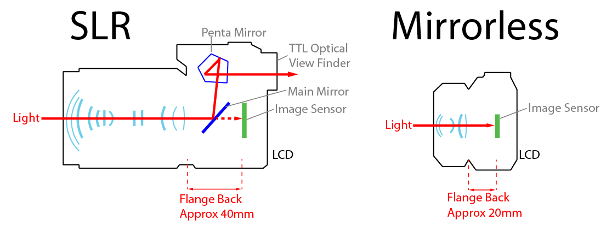

Prima ta camera
DSLR? Mirrorless? Buget restrâns?
În marea de oferte, care mai de care mai atrăgătoare, nu este ușor să alegi un aparat foto. Pentru a te ajuta, am redactat o lista de produse ce te vor însoți și cu care vei învăța să tragi primele tale cadre.
Pentru început, vom preciza faptul că acest articol vizează începătorii și presupunem că bugetul este unul restrâns, până în suma de 2500 de lei, incluzând un obiectiv
Trebuie să ințelegem că există mai multe tipuri de camere digitale.
Tipuri de camere digitale
DSLR
Mirrorless

COMPACT
Acesta este designul consacrat al aparatelor foto profesionale, rămas aproape neschimbat înca din vremea aparatelor foto pe film, este cel mai întălnit format. Lumina intră prin obiectiv, iar aceasta este reflectată de către o oglinda înspre ocular, pentru ca fotograful să poată vedea subiectul fotografiat.
Nikon D3500 - Acest aparat de buget produs de Nikon, ce vine la pachet cu faimosul obieciv 18-55, oferă un seznor APS-C de 24 MP, obiectiv cu stabilizare de imagine și toate funcționalitațile de baza care îti permit să realizezi cele mai impresionante cadre
Canon EOS 2000D În ciuda prețului redus, acest aparat prods Canon ofera același senzor de 24MP disponibil și pe modelele mai scumpe, si vine la pachet cu obiectivul kit 18-55 EF-S Cu stabilizare obtică
Dupa cum sugerează și numele, acestor tip de camere digitale le lipsește oglinda ce direcționa lumina din obiectiv înspre ocular. Asta înseamnă că ocularul tradițional, optic, este înlocuit de unul digital. Imaginea văzută prin ocular este pe un mic ecran, care ia informația direct din senzor. De asemenea, focalizarea nu se mai face cu ajutorul unui senzor dedicat, în care lumina este reflectata de către oglindă, ci direct de pe suprafața senzorului.
Acest fapt oferă multe avantaje precum vizualizarea în timp real a expunerii cadrului, viteze mult mai mari de fotografiere, dar și dimensiuni mai mici
Canon EOS M100 - Seria M a producătorului Canon oferă aparate de mici dimensiuni, dar cu un senzor APSC, și cu obiective interschimbabile. Această camera mirrorless, în ciuda marimii reduse reușeșe să ofere imagini curate, și oferă și capabilități video dezvoltate. De asemenea, aceasta poate trage în rafala pâna la 5 cadre pe secunda.
Panasonic Lumix G7 - Panasonic Lumix DMC-G7 este un aparat foto mirrorless pe sistem MFT (Micro Four Thirds) cu functii foto si video avansate. Cu un corp compact ce urmeaza liniile aparatelor foto DSLR, Panasonic G7 incorporeaza tehnologii de ultima generatie care ii permit sa filmeze 4K UHD si sa fotografieze in rafala cu pana la 8fps cu autofocus continuu.
Sony A6000 - Sony A6000 este un aparat foto cu obiective interschimbabile, robust, elegant si foarte compact, destinat pretentiosilor ce doresc calitatea unui dSLR in corpul unui compact!
Această categorie conține o multitudine de aparate de fotografiat, în general destinate amatorilor, de dimensiuni mici, al caror obiectiv nu este interschimbabil
În zilele noastre, telefoanele mobile au ajuns să depășească majoritatea camerelor compacte, însă încă mai există cateva modele care țin acest segment în viața. În ciuda faptului că deja există pe piața a 7ea iterație a acestu model, sony RX100, varianta din priam generația a trecut printr o serie de scaderi de preț, ajungând astfel la prețul de 1500 de lei. În ciuda lipsei funcționalitatilor mai avansate, acastă cameră reușește cu brio să îi satisfacă pe cei care înca preferă o camera compactă in detrimentul pozelor cu telefonul mobil.
Sony DSC-RX100